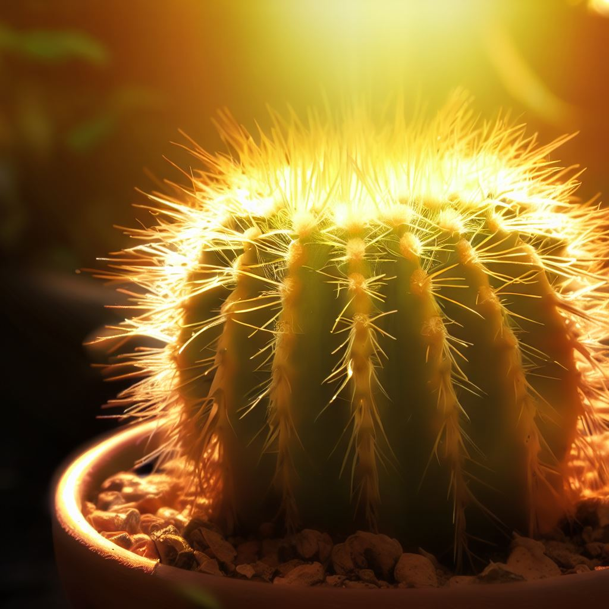
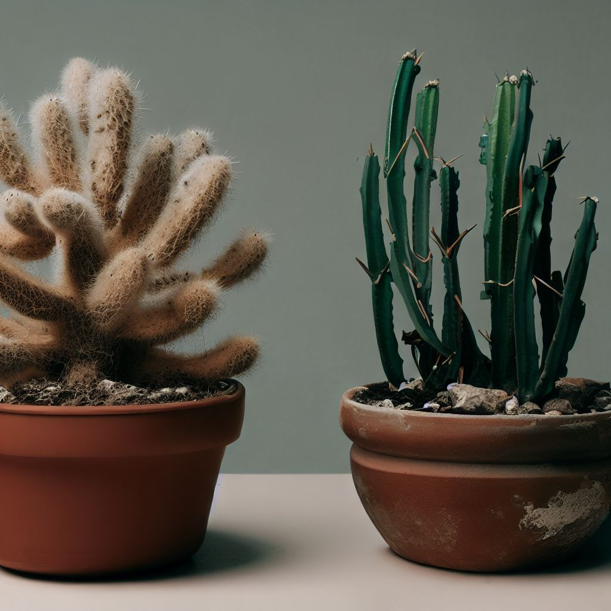
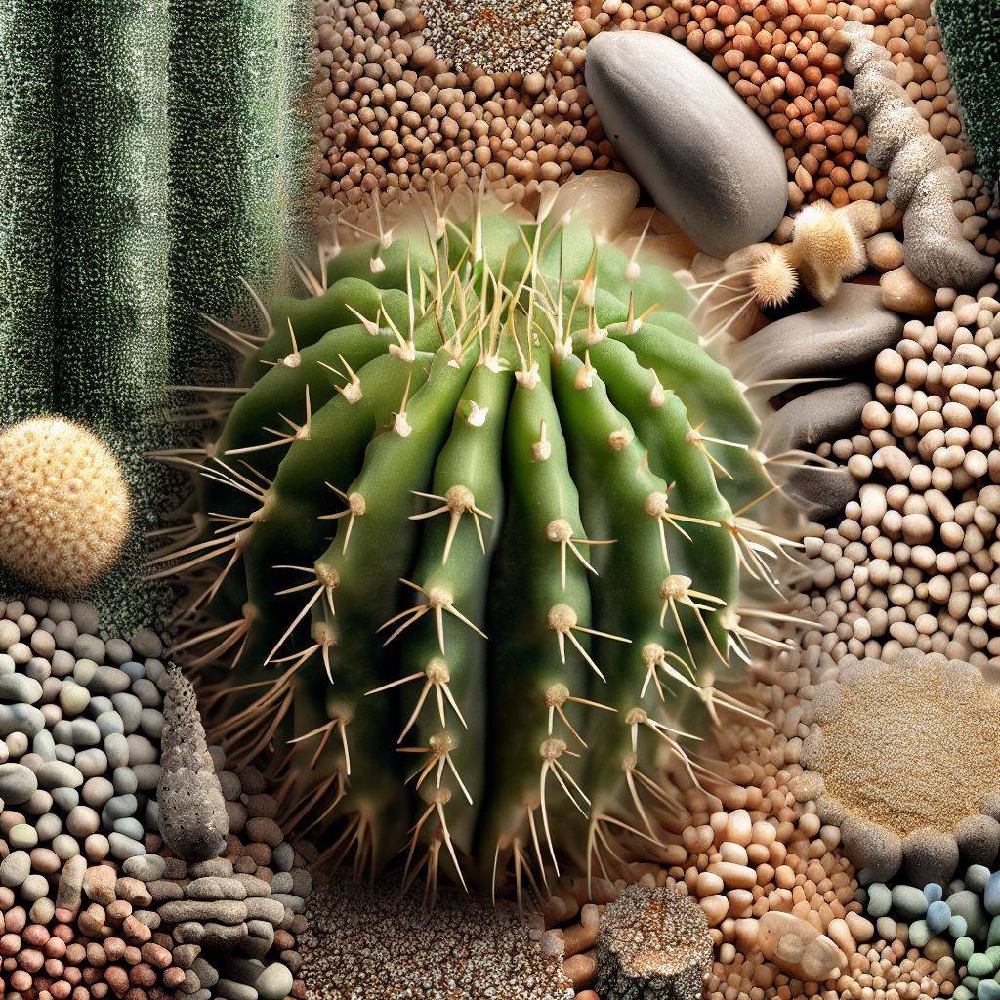
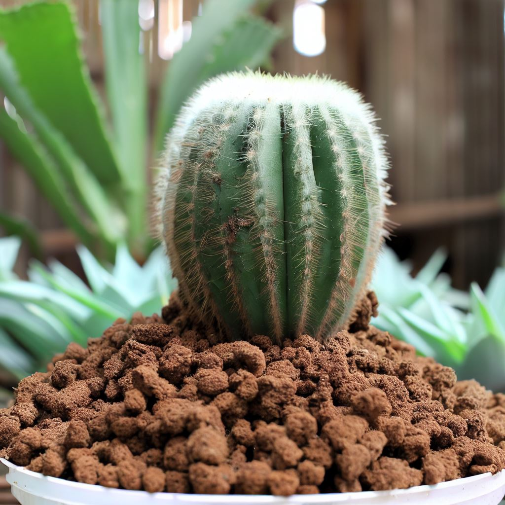
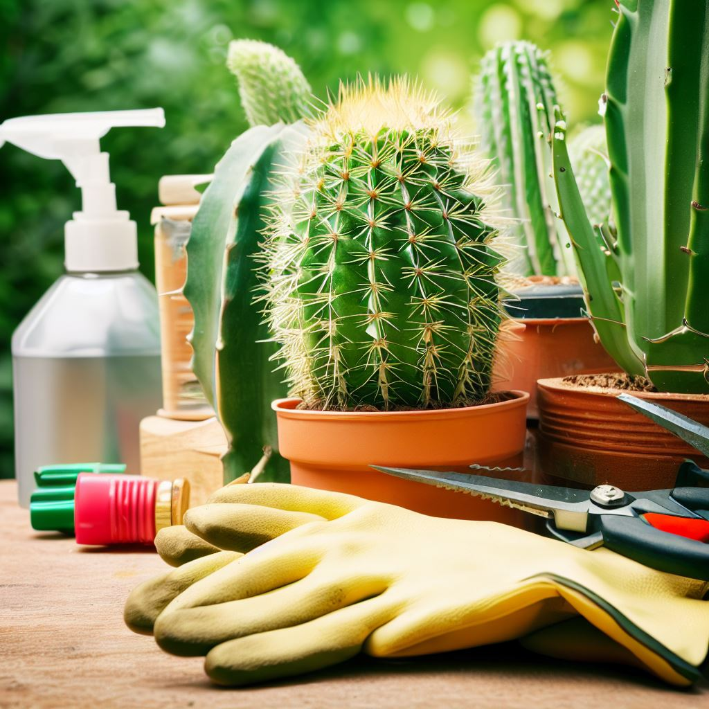

Consejos para la Ubicación y Cuidado Óptimo de tus CactusIntroducción: Cuando se trata de cuidar adecuadamente tus cactus, la elección del lugar adecuado es fundamental. En este artículo, aprenderás cómo seleccionar la ubicación perfecta y cuidar de tus cactus para asegurar su crecimiento óptimo. Vamos a explorar la importancia de la "ubicación de cactus" y el "cuidado de cactus." La Importancia de la Ubicación y Cuidado de Cactus: Antes de sumergirnos en los detalles, comprendamos la importancia de cuidar bien tus cactus. Estas fascinantes plantas vienen en una amplia variedad, y cada una tiene necesidades específicas en términos de luz solar, temperatura y riego. Aquí, te proporcionaremos información detallada sobre cómo satisfacer estas necesidades para tus cactus y promover un crecimiento saludable. Ubicación y Luz Solar: Los cactus, como todas las plantas, dependen de la luz solar para sobrevivir. Algunos tipos de cactus requieren más luz que otros. Por ejemplo, los cactus del desierto suelen necesitar un sol brillante durante todo el día, mientras que otros tipos pueden prosperar con menos luz solar directa. Conoce las necesidades de tus cactus específicos y elige su ubicación en consecuencia. Temperaturas Ideales: Además de la luz solar, la temperatura es crucial para el bienestar de tus cactus. La mayoría de los cactus prefieren temperaturas cálidas durante el día y temperaturas más frescas por la noche. Investigar las preferencias de temperatura de tus cactus específicos te ayudará a mantener un ambiente óptimo para su crecimiento. Consejos para el Riego: El riego es otro aspecto importante del cuidado de los cactus. Generalmente, se debe regar con moderación, permitiendo que la tierra se seque completamente entre riegos. Sin embargo, los detalles varían según el tipo de cactus y la temporada. Investiga y ajusta tu rutina de riego según las necesidades individuales de tus cactus. Llamado a la Acción: Si deseas seguir aprendiendo sobre el cuidado de cactus y obtener más consejos útiles, te invitamos a explorar otros artículos relacionados en nuestro sitio web. Además, suscríbete a nuestro boletín para recibir actualizaciones regulares sobre el cuidado de plantas y jardinería. Con estos consejos, estarás bien encaminado para cuidar y ubicar tus cactus de manera efectiva, promoviendo su crecimiento óptimo y disfrutando de su belleza única en su máxima expresión. |
 |
Consejos para el Cuidado de Cactus: Riego Inteligente y Prevención de Pudrición de RaícesEn este artículo, exploraremos la importancia de un riego inteligente para cactus y cómo evitar uno de los errores más comunes: el riego excesivo. También discutiremos la prevención de la pudrición de raíces en cactus. La Importancia del Riego Adecuado: Antes de adentrarnos en los detalles, es fundamental comprender por qué el cuidado de cactus requiere un enfoque específico para el riego. A diferencia de muchas otras plantas, los cactus suculentos son expertos en sobrevivir en condiciones áridas. El exceso de agua puede ser perjudicial, lo que hace que el riego de cactus sea una parte crítica de su cuidado. Cuándo Regar tus Cactus: La regla de oro para el riego de cactus es simple pero crucial: solo riega tus cactus cuando el sustrato esté completamente seco al tacto. Esto significa que debes verificar la humedad del suelo antes de cada riego. Dejar que la tierra se seque por completo entre riegos es esencial para evitar problemas de pudrición de raíces en cactus, una preocupación común en el cultivo de cactus. Detalles Específicos para el Riego: Para un riego de cactus aún más efectivo, ten en cuenta las necesidades individuales de tus cactus. Algunas variedades pueden requerir un riego más frecuente, mientras que otras prosperarán con riegos más espaciados. Investiga las necesidades de tus cactus suculentos específicos y ajusta tu rutina de riego en consecuencia. El cuidado de cactus es crucial para mantener la salud y el crecimiento óptimo de tus plantas. Siguiendo la regla de esperar a que el sustrato esté completamente seco, evitarás el riesgo de pudrición de raíces en cactus y disfrutarás de cactus de interior y cactus de exterior vibrantes y saludables en tu colección. ¡No subestimes la importancia de cuidar la cantidad de agua que reciben tus cactus! |  |
Consejos para el Sustrato Perfecto en el Cultivo de CactusIntroducción: La elección del sustrato adecuado es crucial para el cultivo exitoso de cactus. Elegir el sustrato correcto puede marcar la diferencia en la salud y el crecimiento de tus cactus suculentos, tanto los de interior como los de exterior. Sustrato para Cactus: Un Elemento Esencial El sustrato para cactus es un componente esencial en el cultivo de estas plantas únicas. Un sustrato para cactus de alta calidad es fundamental para el crecimiento saludable de tus cactus suculentos. La tierra específica para cactus es el punto de partida. La Mezcla Perfecta de Sustrato para Cactus Para preparar la mezcla de sustrato para cactus, combina tierra para cactus, arena y perlita en proporciones adecuadas. Esta mezcla de sustrato para cactus proporciona el drenaje adecuado para cactus, imitando las condiciones del desierto donde estas plantas prosperan. Prevención de Pudrición de Raíces en Cactus Elegir el sustrato adecuado para cactus también es una estrategia efectiva para la prevención de pudrición de raíces en cactus. Un sustrato bien drenado evita que el exceso de agua dañe las raíces de tus cactus. Consejos para Preparar tu Sustrato: Ajusta las proporciones de sustrato para cactus según las necesidades específicas de tus plantas. Recuerda que algunas variedades de cactus pueden requerir una mezcla ligeramente diferente. Experimenta y observa cómo responden tus cactus a diferentes mezclas de sustrato. En resumen, la elección del sustrato ideal para cactus es un factor clave en el cuidado de estas plantas suculentas. Al seguir estos consejos y seleccionar cuidadosamente tu sustrato para cactus, proporcionarás a tus plantas un ambiente propicio para un crecimiento saludable. Si deseas obtener más consejos de cuidado del sustrato de cactus o explorar información adicional sobre sustrato para cactus y suculentas, te invitamos a visitar nuestro sitio web. ¡Comparte estos consejos de sustrato para cactus saludables con otros amantes de las plantas! |  |
Consejos para el Abonado Responsable de CactusEl abonado de cactus es un aspecto esencial en su cuidado, pero es importante hacerlo de manera responsable. A diferencia de muchas otras plantas, los cactus no requieren ser abonados con frecuencia. De hecho, el exceso de fertilización puede ser perjudicial para su salud. Para mantener tus cactus sanos y felices, aquí tienes algunos consejos para el abonado responsable:
Recuerda que es importante seguir las indicaciones específicas de fertilización para tus cactus, ya que las necesidades pueden variar según la especie y la edad de las plantas. Con un abonado responsable, tus cactus prosperarán y mantendrán su belleza única. Para obtener más consejos sobre el cuidado de tus cactus y suculentas, así como información adicional sobre la fertilización adecuada, te invitamos a explorar otros artículos en nuestro sitio web. |  |
Mantén tus Cactus Libres de Plagas y EnfermedadesIntroducción: Aunque los cactus suelen ser resistentes a las plagas y enfermedades, es esencial estar alerta ante posibles problemas. En este artículo, aprenderás cómo llevar a cabo una prevención efectiva de plagas y enfermedades en cactus para mantener tus plantas saludables y en su mejor forma. Resistencia Natural de los Cactus: Los cactus son, en su mayoría, conocidos por su capacidad de sobrevivir en condiciones difíciles. Sus espinas y su habilidad para almacenar agua les brindan una resistencia natural contra plagas y enfermedades. Sin embargo, no están exentos de riesgos. Vigilancia Regular de tus Cactus: A pesar de su resistencia, es importante realizar revisiones regulares de tus cactus. Inspecciona minuciosamente tus plantas en busca de posibles plagas como ácaros o cochinillas, así como signos de enfermedades como la pudrición de raíces de cactus. Detección Temprana para una Solución Eficaz: Cuanto antes detectes un problema, más fácil será resolverlo. La detección temprana de plagas y enfermedades en cactus es fundamental para mantener tus plantas en excelente estado de salud. Si identificas algún signo de infestación o enfermedad, toma medidas inmediatas. Medidas Preventivas: Para prevenir problemas, puedes adoptar medidas preventivas, como:
Conclusión: En resumen, aunque los cactus son resistentes, no están exentos de plagas y enfermedades. La prevención y detección temprana de problemas en cactus son clave para mantener tus plantas en óptimas condiciones. Con una atención regular y medidas preventivas, tus cactus seguirán prosperando y brindándote su belleza única durante mucho tiempo. |  |